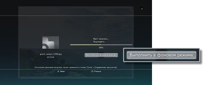

Сеть > Фоновая загрузка
Фоновая загрузка
Загрузка в фоновом режиме позволяет выполнять другие операции во время загрузки нескольких элементов данных с большим размером файлов. Эта функция доступна, только когда на экране, отображаемом при загрузке, отображается команда [Выполнить в фоновом режиме].

Подсказки
- Возможно, в зависимости от типа или количества данных для загрузки не удастся выполнить фоновую загрузку.
- Может потребоваться установка для использования загруженных данных, например игр или видеофайлов. По завершении загрузки данные, которые требуется установить, будут отображаться как
 или
или  в каждой категории.
в каждой категории. - Фоновая загрузка может быть недоступна, если на жестком диске находятся установленные данные.
- Если система PS3™ выключается при фоновой загрузке, статус загрузки сохраняется. При следующем включении системы PS3™ и подключении к Интернету загрузка будет автоматически перезапущена.
- При выполнении какой-либо из следующих операций фоновая загрузка будет временно остановлена. По завершении операции загрузка будет автоматически перезапущена.
- - При воспроизведении диска Blu-ray или DVD-диска
- - При использовании функций сети в интерактивных играх *
- - При запуске программного обеспечения формата PlayStation®2
- - При запуске
 (Folding@home™)
(Folding@home™) - - При использовании функций голосового/видео-чата
- - При выполнении обновления системы
- - При настройке параметров в меню
 (Настройки)
(Настройки)
*
При завершении игры фоновая загрузка будет временно остановлена.
Примечания
- В системе PS3™ некоторое программное обеспечение формата PlayStation®2 и PlayStation® может воспроизводиться не так, как в системах PlayStation®2 или PlayStation®, или вообще не работать.
- В некоторых системах PS3™ программное обеспечение формата PlayStation®2 не воспроизводится. Подробнее см. в разделе [Типы воспроизводимых дисков], на региональном веб-сайте SCE или в документации к системе PS3™.
Управление загрузкой
Этот параметр отображается только при выполнении фоновой загрузки. Можно проверить состояние или отменить загрузку данных, загружаемых с помощью  (Веб-браузер) или
(Веб-браузер) или  (PlayStation®Store). Выберите
(PlayStation®Store). Выберите  (Управление загрузкой) в категории
(Управление загрузкой) в категории  (Сеть).
(Сеть).
Проверка состояния загрузки
Выберите значок данных, для которых требуется проверить состояние загрузки, нажмите кнопку  , а затем в меню параметров выберите [Состояние].
, а затем в меню параметров выберите [Состояние].
Отмена загрузки
Выберите значок данных, загрузку которых требуется отменить, нажмите кнопку и выберите [Отмена] в меню параметров. После отмены загрузки соответствующая информация будет удалена из меню (Управление загрузкой).
Приостановка и возобновление загрузки
Выберите значок данных, загрузку которых требуется приостановить, нажмите кнопку и выберите [Пауза] в меню параметров. Для возобновления загрузки еще раз нажмите кнопку и выберите [Продолжить] в меню параметров.
Подсказки
- Если загрузка приостановлена, то
 отображается вместе со значком.
отображается вместе со значком. - Если при загрузке нескольких блоков данных приостановить загрузку одного из них, автоматически начинается загрузка следующего блока данных.
Приостановка всех операций загрузки
Выберите значок любой операции загрузки, нажмите кнопку и выберите [Приостановить все] в меню параметров.
Возобновление всех операций загрузки
Выберите значок любой операции загрузки, нажмите кнопку и выберите [Продолжить все] в меню параметров.